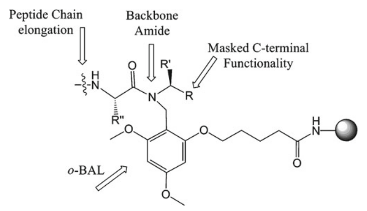
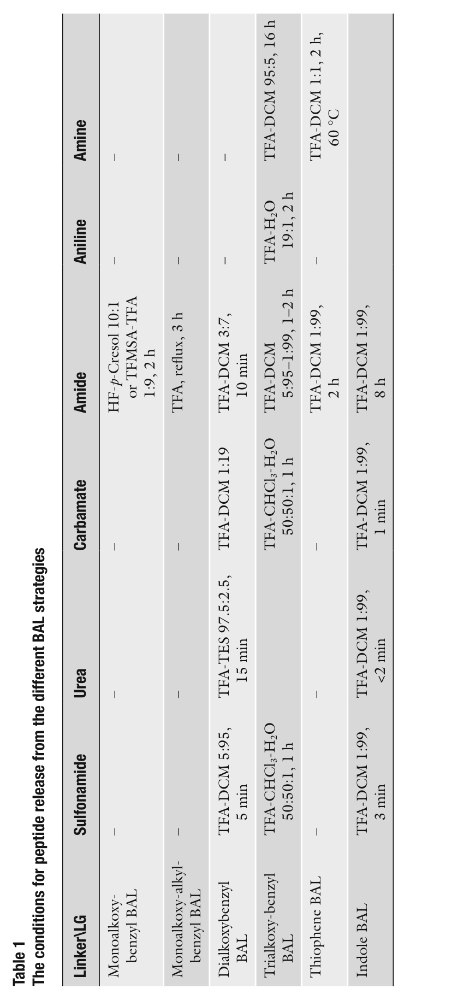

Chapter 9
Backbone Amide Linker Strategy: Protocols for the Synthesis of C-Terminal Peptide Aldehydes
作者：Pernille Tofteng Shelton & Knud J. Jensen
出处：Methods in Molecular Biology, vol. 1047 (2013), Springer
在 backbone amide linker (BAL, 骨架酰胺连接基) 策略中，多肽并非通过 C-端连接到固相载体上，而是通过 backbone amide（骨架酰胺）进行锚定，从而使 C-端得以保持游离状态，便于进行各种修饰。因此，这是一种非常通用的引入 C-端修饰的策略。
BAL 策略最初使用 trisalkoxybenzyl linker (三烷氧基苄基连接基) 进行开发，此后一系列具有不同性质的 linker (handle, 把手) 也相继被开发出来。BAL 锚定的建立方式为：先将一个芳香醛（aromatic aldehyde，通常为 trisalkoxybenzaldehyde, 三烷氧基苯甲醛）连接到固相载体上，然后通过 reductive amination (还原胺化) 反应连接第一个 amino acid residue（氨基酸残基）。这一方法也可作为引入其他 C-端修饰以及功能性基团（如 fluorophor, 荧光基团）的通用途径。
第二步是对新形成的 secondary amine (仲胺) 进行 acylation (酰化)，随后通过标准 Fmoc-based 固相合成 (Fmoc-based SPPS) 组装目标肽链。该策略的一个重要应用是 C-端多肽醛 (C-terminal peptide aldehydes) 的合成。在合成过程中，C-端 aldehyde 以 acetal (缩醛) 形式进行保护，在最终的切割步骤中方便地脱保护 (demask)，从而生成游离的 aldehyde。另一个应用是合成带有 C-端 glycine 的 peptide thioesters (肽硫酯)。
关键词：Backbone amide linker (骨架酰胺连接基)、Handle (把手)、Peptide (多肽)、Aldehyde (醛)、Thioester (硫酯)、N-Alkyl amide (N-烷基酰胺)、Cyclic peptide (环肽)、Reductive amination (还原胺化)
【本节要点】BAL 策略的核心创新：通过骨架酰胺而非 C-端锚定多肽，使 C-端可用于各种修饰。
在标准固相多肽合成 (standard solid-phase peptide synthesis, SPPS) 中，生长中的肽链通过 C-端羧基 (C-terminal carboxyl) 锚定到固相载体上，然后沿 N-端方向延伸。然而，这种方式限制了可以引入肽链 C-端 的基团种类。许多具有生物学或医学意义的多肽需要酸和简单酰胺以外的 C-端基团，例如 aldehyde (醛)。Backbone amide linker (BAL) 概念于 1990 年代中期发展出来，通过将肽链锚定在骨架氮原子 (backbone nitrogen) 上、留下 C-端游离以供修饰，从而克服了这一挑战 [1–3]（见图 1）。该策略已在文献 [4] 中得到全面综述。

图 1 Backbone amide linker (BAL) 策略概念示意图（以 o-BAL handle 为例）
多种 linker 已被开发用于 BAL 型化学，起始是 tris(alkoxy)benzylamide (三烷氧基苄基酰胺) 系统。目前最广泛使用的 linker 包括：
• 5-(4-formyl-3,5-dimethoxyphenoxy)-pentanoic acid (p-PALdehyde) 或其丁酸衍生物； • 本研究小组偏好的 5-(2-formyl-3,5-dimethoxyphenoxy)pentanoic acid (o-PALdehyde) [5–7]。
酸不稳定性 (acid lability) 的概览见表 1。在 BAL 策略中，第一个氨基酸或氨基酸衍生物通过 reductive amination (RA, 还原胺化) 锚定。随后对新形成的 secondary amine (仲胺) 进行 acylation (酰化)，之后即可通过标准肽酰胺偶联 (standard peptide amide couplings) 延伸肽链。组装完成的多肽通常用浓 TFA (trifluoroacetic acid, 三氟乙酸) 处理从树脂上释放，同时去除酸不稳定侧链保护基。
然而，o-BAL 酰胺锚定非常不稳定 (very acid labile)，仅用低至 1% TFA in DCM 即可将其切断，同时保持肽链上的酸不稳定保护基完好。在与肽的酸解释放 (acidolytic release) 同时发生的步骤中，C-端官能团可被脱保护 (demask) 以生成所需官能团。
可在 C-端安装的多种官能团包括：
• Alcohols (醇) • Acids (酸) • Ethers (醚) • Esters (酯) • N-Alkylamides (N-烷基酰胺) • N,N-Dialkylamides (N,N-二烷基酰胺) • Hydrazides (酰肼) • Trifluoromethyl ketones (三氟甲基酮) • Aldehydes (醛) [1, 8–10]
可在合成过程中引入的不同 C-端氨基酸衍生物示例包括：
• 脂肪族酯 (aliphatic esters) → 用于 peptide esters (肽酯) • t-Bu ether (叔丁基醚) → 用于 peptide alcohols (肽醇) • t-Bu esters (叔丁基酯) → 用于无外消旋 (racemization-free) 的 peptide acids (肽酸) • Dimethyl acetal (二甲基缩醛) → 用于 peptide aldehydes (肽醛) • Trithioortho esters (三硫代原酸酯) → 用于 peptide thioesters (肽硫酯，见第 8 章)
此外，通过使用 allyl ester (烯丙基酯) 还可以合成 cyclic peptides (环肽) [1]。一篇全面的综述 [4] 展示了不同 BAL 策略的广泛应用，其应用范围已超越肽化学领域。
【本节要点】 1. BAL 策略通过骨架氮锚定肽链，释放 C-端用于修饰； 2. 主要 linker：p-PALdehyde 和 o-PALdehyde； 3. o-BAL 极度酸敏感（1% TFA 即可释放），可保持侧链保护基； 4. C-端可引入醇、酸、醚、酯、醛、硫酯、酰肼等多种官能团； 5. 亦可合成环肽。

表 1 不同 BAL 策略中肽释放条件一览（Linker 类别 × 离去基团类型）
表 1 展示了不同 BAL linker（行）与不同离去基团 (leaving group, LG) 类型（列）组合下，实现肽释放所需的酸性条件。可以看出：
• Monoalkoxy-benzyl BAL 和 Monoalkoxy-alkyl-benzyl BAL 需要苛刻条件（如 HF/p-Cresol 或回流 TFA）； • Dialkoxybenzyl BAL 所需条件中等（TFA-DCM 5:95 至 3:7）； • Trialkoxy-benzyl BAL 中 Amide 离去基团仅需 TFA-H₂O 19:1 处理 2 h； • Thiophene BAL 和 Indole BAL 的条件因离去基团而异，某些组合极为温和（如 Indole BAL 的 Carbamate 仅需 TFA-DCM 1:99 处理 1 min）。
【表 1 要点】Linker 的选择和离去基团类型共同决定切肽条件的温和程度。从表中可见，Indole BAL 在多数离去基团下条件最温和，而 Monoalkoxy 系列 最苛刻。
BAL 策略的一个成熟应用是 C-端多肽醛 (C-terminal peptide aldehydes) 的合成 [10]。多肽醛是化学选择性反应 (chemoselective reactions) 中的亲电伙伴，例如：
• Oxime formation (肟键形成) [11] • Hydrazone formation (腙键形成) [12]
多肽醛还可作为某些蛋白水解酶 (proteolytic enzymes) 的 transition state analogs (过渡态类似物)，表现出抑制活性 [13]。然而，这些 C-端多肽醛的合成并非一个简单的合成挑战，其他方法也已有报道 [14–17]。
用于合成 C-端多肽醛的 BAL 策略利用 acetal (缩醛) 官能团作为醛基的保护形式，在最终切割步骤中被脱保护 (demask)。本研究小组已使用该策略合成了一系列不同的所谓 carboproteins (碳蛋白)，其中以碳水化合物模板 (carbohydrate template) 功能化四个 aminooxy groups (氨氧基)，然后在溶液中与多肽醛反应 [18, 19]。第 3 节给出了使用 BAL 策略合成 C-端多肽醛的详细规程。
BAL linker 策略的另一个有用应用是合成 C-端 glycinal peptide thioesters (C-端甘氨醛肽硫酯) [20]。该方法在第 8 章中描述。
【本节要点】 1. 多肽醛用途：化学选择性反应（肟键、腙键形成）和酶抑制剂（过渡态类似物）； 2. BAL 策略中醛基以 dimethyl acetal 保护，最终 TFA 切割时一并脱保护； 3. 实际应用包括 carboproteins（碳蛋白）组装。
所有 BAL 型 linker 的核心特征是通过树脂键合的醛基官能团 (resin-bound aldehyde functionality) （作为亲电试剂，electrophile）对第一个残基进行 reductive amination (RA, 还原胺化) 锚定。第一个 building block（含一级胺，primary amine）作为亲核试剂 (nucleophile)。这通常通过将第一个残基经 RA 连接到树脂键合的 linker 前体（即 BAL handle）上来实现。
第一个被引入的 building block 通常是一个带有游离胺的氨基酸衍生物或其盐酸盐 (HCl salt) 形式。RA 反应通常以一锅法 (one-pot reaction) 进行——亚胺形成 (imine formation) 和还原 (reduction) 在弱酸性条件下同步完成。通常加入 1% (v/v) AcOH（醋酸）；但在使用胺的盐酸盐时，有时可省略额外加酸 [1, 7]。
优选溶剂 (preferred solvent) 在多数情况下为 MeOH（甲醇），尽管在使用聚苯乙烯树脂 (polystyrene resins) 时，DMF 已被证明更有效。RA 反应以一锅法进行，优选使用 NaBH₃CN (sodium cyanoborohydride, 氰基硼氢化钠)（十倍过量, tenfold excess）作为还原剂。微波加热 (microwave heating) 至 60°C 进行 RA 步骤可提高效率，将反应时间从过夜缩短至约 10 min [18]。
【本节要点】 1. RA 一锅法：imine 形成 + 还原同步进行； 2. 弱酸条件：通常加 1% AcOH； 3. 溶剂选择：MeOH（通用）或 DMF（聚苯乙烯树脂更佳）； 4. 还原剂：NaBH₃CN（10 当量）； 5. 微波 60°C 可大幅缩短反应时间（过夜→10 min）。
对 secondary amine (仲胺) 的 acylation (酰化) 需要特别注意 acylating agent (酰化试剂) 的选择。HATU 活化 (HATU activation) 或预形成对称酸酐 (preformed symmetrical anhydrides) 是最成熟的方法。
本研究小组一直选择对称酸酐介导的酰化 (symmetric anhydride-mediated acylation) 方法，使用 DCM（二氯甲烷）为优选溶剂。为增加氨基酸的溶解度，常使用 DCM:DMF (9:1) 混合溶剂，其中 DMF 在 DCM 之前加入。反应可在室温下进行 2 × 2 h，但微波加热至 60°C 可将反应时间缩短至数分钟 [21]。在此情况下，DCM 需替换为沸点更高的 DCE（1,2-二氯乙烷）。
【本节要点】 1. 仲胺酰化的两种主要方法：HATU 活化 或 对称酸酐法； 2. 对称酸酐法优选溶剂：DCM 或 DCM:DMF (9:1)； 3. 微波条件：60°C，DCM 需替换为 DCE（更高沸点）； 4. 室温：2 × 2 h；微波可缩短至分钟级。
所有实用的 BAL handle 都通过酸解 (acidolysis) 将组装好的肽从树脂上释放。例如用 TFA 处理时，BAL handle 释放出肽骨架中的 secondary amide (仲酰胺)。已有报道仅需 1% TFA in DCM 即可从 o-BAL handle 上释放肽，同时保持溶液中肽上的永久性侧链保护基完好。
BAL 和 C-端 PAL 锚定在酸解释放肽时都产生相同的 trialkoxybenzyl carbenium ion (三烷氧基苄基碳正离子)。然而，实际离去基团 (leaving group) 存在差异。对于 PAL handle，离去基团是 C-端带有初级酰胺 (primary amide) 的肽（亚胺酸酯，imidate）；而 BAL handle 释放的是肽骨架中的仲酰胺 (secondary amide, imidate)。
Albericio 和 Barany 报道 PAL handle 需要浓 TFA 才能实现有效释放——他们总结为需要 70–90% (v/v) TFA in DCM；更低的 TFA 浓度（5–50%）只能实现部分释放 [5, 6]。相比之下，结构类似的 trialkoxybenzyl BAL handle 可以在显著更低的 TFA 浓度下释放肽（低至 1% TFA in DCM）。
peptidyl-BAL 键合比 peptidyl-PAL 键合具有更高的酸不稳定性 (higher acid lability)，这必定源于离去基团的差异——即 N-取代酰胺 (N-substituted amide) 比未取代酰胺 (non-substituted amide) 具有更好的离去基团能力。这似乎是由于 BAL handle 锚定肽的基态去稳定化 (ground-state destabilization) 中的空间因素 (steric factors) 所致 [22]。
【本节要点】 1. 所有 BAL handle 均通过酸解释放肽，产生 trialkoxybenzyl carbenium ion； 2. o-BAL 仅需 1% TFA/DCM 即可释放（极温和），而 PAL 需 70–90% TFA； 3. 差异原因：BAL 释放仲酰胺离去基团（N-取代，离去能力更强）； 4. 根本原因：空间因素导致的基态去稳定化。
本章实验所用材料清单如下：
1. Aminomethylated Tentagel resin（氨基甲基化 Tentagel 树脂），loading 0.29 mmol/g （Rapp Polymere 公司）。
2. o-PALdehyde = 5-(2-formyl-3,5-dimethoxyphenoxy)pentanoic acid （Peptides International 公司）。
3. Fmoc-protected amino acids（Fmoc 保护的氨基酸）。
4. Aminoacetaldehyde dimethylacetal (NH₂CH₂CH(OCH₃)₂) （氨基乙醛二甲基缩醛）——用于引入 C-端醛保护基。
5. Amino acid t-Bu ester chloride salts（氨基酸叔丁酯盐酸盐）——可用于引入其他 C-端官能团。
6. NaBH₃CN：Sodium cyanoborohydride（氰基硼氢化钠）——还原胺化用还原剂。
7. Coupling reagents（偶联试剂）：DIC, HBTU, HOBt, Oxyma。
8. Solvents（溶剂）：DMF, NMP, DCM, TFA, DIEA, piperidine。
9. Triethylsilane (TES)（三乙基硅烷）——常作为切割清除剂，但本章中因对醛基有还原作用而省略。
10. Microwave instrument（微波仪器）：Biotage Initiator，使用其专用玻璃瓶或新型过滤玻璃瓶（连接 Initiator Peptide Workstation）。
【材料要点】核心试剂包括：o-PALdehyde linker、Tentagel 树脂 (0.29 mmol/g)、NaBH₃CN（还原胺化）、氨基乙醛二甲基缩醛（C-端醛前体）。注意：因醛基对还原敏感，切肽时不使用 TES/TIS 等还原性清除剂。
树脂与 linker 的连接使用标准的酰胺键形成 (amide bond formation) 化学。最初仅使用 2 当量的 o-PALdehyde；但更高浓度和更大当量显然能加快偶联速度。以下规程适用于带有聚丙烯滤膜的微波合成玻璃瓶。
1. 将树脂置于带滤膜的微波瓶中（或普通带滤膜的聚苯乙烯注射器，见 Note 1），用 DCM 溶胀 (swell) 20–30 min，然后用 DMF 洗涤树脂。
2. 在另一容器（如 15 mL Falcon 离心管）中，称取 HBTU (1.8 equiv.)、HOBt (2 equiv., 见 Note 2)、o-PALdehyde (2 equiv.) 和 DIEA (4 equiv.)，加入 DMF 至总体浓度约 0.2 M。对于 0.1 mmol 规模，约需 2 mL DMF。
3. 将 DMF 混合液加入树脂中，微波加热 75°C × 10 min。然后过滤树脂以去除过量偶联试剂。
4. 可重复步骤 2 和 3（即 double coupling, 双偶联）以获得更高的载量 (loading)。
5. 用 DMF 洗涤 (×3) 和 MeOH 洗涤 (×3)。
【操作要点】o-PALdehyde 连接：HBTU (1.8 eq)/HOBt (2 eq)/DIEA (4 eq)，75°C 微波 10 min，可双偶联提高载量。
还原胺化 (reductive amination, RA) 是高度优化的步骤，应严格遵循。关于不同发展的讨论见第 1.2 节。此步骤决定了最终肽的 C-端官能性。以下规程仅适用于 C-端多肽醛：
1. 将 NaBH₃CN (10 equiv.) 和 NH₂CH₂CH(OCH₃)₂ (10 equiv.) 加入树脂中（置于微波瓶中）。加入 MeOH:AcOH (99:1)（0.1 mmol 规模约 7 mL），盖好瓶盖（见 Note 3）。
2. 微波加热 60°C × 10 min，然后充分洗涤树脂：MeOH (×3)、DMF (×3)、MeOH (×1)。
3. 重复步骤 1 和 2，省略最后的 MeOH 洗涤。
【操作要点】此步骤引入氨基乙醛二甲基缩醛作为 C-端醛的前体。NaBH₃CN (10 eq) + 缩醛 (10 eq)，MeOH:AcOH (99:1)，60°C 微波 10 min × 2 次。
本研究小组使用对称酸酐介导的酰化 (symmetric anhydride-mediated acylation) 方法，在 trialkoxybenzyl amine 系统上引入第二个残基。
1. 用 DCM 洗涤树脂。
2. 称取 Fmoc-amino acid (10 equiv.)，加入 DMF（0.1 mmol 规模约 700 μL）。然后加入 DCM（6.3 mL, 0.1 mmol 规模）和 DIC (5 equiv.)（见 Note 4）。预活化 (pre-activate) 10 min。
3. 将溶液加入树脂（微波瓶中），60°C 反应 10 min。过滤去除过量偶联液。
4. 重复步骤 1 和 2。
5. 用 DMF (×3) 和 DCM (×3) 洗涤树脂。
【操作要点】仲胺酰化使用对称酸酐法：Fmoc-AA (10 eq) + DIC (5 eq) 在 DCM:DMF (9:1) 中预活化 10 min，然后 60°C 微波 10 min × 2 次。大过量试剂确保仲胺的高效酰化。
为评估二肽树脂 (dipeptidyl resin) 的质量，进行 Fmoc 定量 (Fmoc quantification) 以测定树脂载量 (loading)（具体方法见第 2 章）。
【操作要点】Fmoc 定量是质控关键步骤——只有确认二肽载量达到要求后，才能进入后续自动合成阶段。
执行标准肽偶联 (standard peptide couplings) 有许多不同方法。在树脂上合成第一个二肽 (dipeptide) 后，剩余的肽组装非常适合自动化合成 (automated synthesis)。详细描述见第 1 章。
【操作要点】BAL 前两步（RA + 酰化）需手动操作；形成二肽后可转入自动化 SPPS。
肽从固相载体上的释放使用 TFA 和水（作为清除剂, scavenger）。在此类切割中不使用 TES/TIS，因为这些清除剂对 C-端醛基官能团有还原作用 (reducing effect)。
1. 用 DCM 洗涤树脂，真空干燥 1–2 h。
2. 加入 TFA-H₂O (19:1)（0.1 mmol 规模约 10 mL），反应 3 h（见 Note 5）。
3. 过滤树脂，收集 TFA-肽混合液。用 TFA 和 DCM 洗涤树脂，收集滤液。
4. 用 N₂ 吹除 TFA 和 DCM，然后用乙醚 (diethyl ether) 沉淀肽；离心后去除乙醚。乙醚处理重复一次。
5. 肽空气干燥约 30 min，然后溶于 H₂O-CH₃CN 中，用 LC-MS 分析后冻干 (lyophilized)。
【操作要点】TFA:H₂O = 19:1 切割 3 h。关键：不使用 TES/TIS（会还原醛基！）！乙醚沉淀 → 离心 → LC-MS 分析 → 冻干。
1. 上述规程适配于带滤膜的微波玻璃瓶（Biotage Initiator Peptide Workstation）。如果没有该设备，可使用普通带滤膜的聚苯乙烯注射器替代。每次微波辅助反应前需将树脂转移至微波瓶中。
2. HOBt 的获取因航空运输限制 (restrictions on air transportation) 而受限。替代方案：可使用 Oxyma 作为添加剂；或完全省略添加剂，单独使用 HBTU；也可使用其他偶联试剂如 HATU。
3. 如果在开放式微波瓶系统 (open microwave vial system) 中进行反应，请使用 DMF:AcOH (99:1) 替代 MeOH:AcOH (99:1)。
4. 如果在开放式微波瓶系统中进行反应，请使用 DCE 替代 DCM（因 DCE 沸点更高）。
5. 树脂与 TFA 切割混合液在反应过程中需手动搅拌 3–5 次。
【注释要点】 1. 设备灵活：微波瓶或普通注射器均可； 2. HOBt 替代：Oxyma 或 HBTU 单独使用； 3. 开放系统：溶剂需调整（DMF 替 MeOH, DCE 替 DCM）； 4. 切割时需手动搅拌。
[1] Jensen KJ, Alsina J, Songster M, Vagner J, Albericio F, Barany G (1998) Backbone amide linker (BAL) strategy for solid-phase synthesis of C-terminal-modified cyclic peptides. J Am Chem Soc 120:5441–5452
[2] Jensen KJ, Songster MF, Vagner J, Alsina J, Albericio F, Barany G (1996) Innovation and Perspectives in Solid Phase Synthesis & Combinatorial Chemical Libraries. In: Epton R (ed) Collected Papers, Fourth International Symposium. Mayflower Scientific Ltd., Kingswinford, pp 187–190
[3] Jensen KJ, Songster MF, Vágner J, Alsina J, Albericio F, Barany G (1996) In: PTP Kaumaya, RS Hodges (eds) Peptides—chemistry, structure and biology: proceedings of the fourteenth American peptide symposium (1995), Mayflower Scientific, Kingswinford, UK
[4] Boas U, Brask J, Jensen KJ (2009) Backbone amide linker in solid-phase synthesis. Chem Rev 109:2092–2118
[5] Albericio F, Barany G (1987) An acid-labile anchoring linkage for solid-phase synthesis of C-terminal peptide amides under mild conditions. Int J Pept Protein Res 30:206–216
[6] Albericio F, Kneib-Cordonier N, Biancalana S, Gera L, Masada RI, Hudson D, Barany G (1990) Preparation and application of the 5-(4-(9-fluorenylmethyloxycarbonyl)aminomethyl-3,5-dimethoxyphenoxy)-valeric Acid (PAL) handle for the solid-phase synthesis of C-terminal peptide amides under mild conditions. J Org Chem 55:3730–3743
[7] Boas U, Brask J, Christensen J, Jensen KJ (2002) The ortho backbone amide linker (o-BAL) is an easily prepared and highly acid-labile handle for solid-phase synthesis. J Comb Chem 4:223–228
[8] Alsina J, Jensen K, Albericio F, Barany G (1999) Solid-phase synthesis with Tris(alkoxy)benzyl backbone amide linkage (BAL). Chem Eur J 5:2787–2795
[9] Alsina J, Yokum TS, Albericio F, Barany G (1999) Backbone amide linker (BAL) strategy for Nα-9-fluorenylmethoxycarbonyl (Fmoc) solid-phase synthesis of unprotected peptide p-nitroanilides and thioesters. J Org Chem 64:8761–8769
[10] Guillaumie F, Kappel JC, Nicholas MK, Barany G, Jensen KJ (2000) Solid-phase synthesis of C-terminal peptide aldehydes from amino acetals anchored to a backbone amide linker (BAL) handle. Tetrahedron Lett 41:6131–6135
[11] Rose K (1994) Facile synthesis of homogeneous artificial proteins. J Am Chem Soc 116:30–33
[12] Shao J, Tam JP (1995) Unprotected peptides as building blocks for the synthesis of peptide dendrimers with oxime, hydrazone, and thiazolidine linkages. J Am Chem Soc 117:3893–3899
[13] Fehrentz JA, Paris M, Heitz A, Velek J, Liu C-F, Winternitz F, Martinez J (1995) Improved solid phase synthesis of C-terminal peptide aldehydes. Tetrahedron Lett 36:7871–7874
[14] Leliévre D, Chabane H, Delmas A (1998) Simple and efficient solid-phase synthesis of unprotected peptide aldehyde for peptide segment ligation. Tetrahedron Lett 39:9675–9678
[15] Ede NJ, Bray AM (1997) A simple linker for the attachment of aldehydes to the solid phase application to solid phase synthesis by Miltipin™ method. Tetrahedron Lett 38:7119–7122
[16] Fehrentz JA, Paris M, Heitz A, Velek J, Winternitz F, Martinez J (1997) Solid phase synthesis of C-terminal peptide aldehydes. J Org Chem 62
[17] Dinh TQ, Armstrong RW (1996) Synthesis of ketones and aldehydes via reactions of Weinreb-type amides on solid support. Tetrahedron Lett 37:1161–1164
[18] Tofteng AP, Hansen TH, Brask J, Nielsen J, Thulstrup P, Jensen KJ (2007) Synynthesis of functionalized de novo designed 8–16 kDa model proteins towards metal ion-binding and esterase activity. Org Biomol Chem 5:2225–2233
[19] Brask J, Jensen KJ (2001) Carboproteins: a 4-α-helix bundle protein model assembled on a D-galactopyranoside template. Bioorg Med Chem Lett 11:697–700
[20] Brask J, Albericio F, Jensen KJ (2003) Fmoc solid-phase synthesis of peptide thioesters by masking as trithioortho esters. Org Lett 5:2951–2953
[21] Brandt M, Gammeltoft S, Jensen K (2006) Microwave heating for solid-phase peptide synthesis: general evaluation and application to 15-mer phosphopeptides. Int J Pept Res Ther 12:349–357
[22] Norrby P-O, Jensen K (2006) Steric effects in release of amides from linkers in solid-phase synthesis. Molecular mechanics modeling of key step in peptide and combinatorial chemistry. Int J Pept Res Ther 12:335–339
本章详细描述了利用 backbone amide linker (BAL) 策略合成 C-端多肽醛的完整规程。BAL 策略的核心思想是：将肽链通过骨架酰胺氮（而非传统的 C-端羧基）锚定到固相载体上，从而释放 C-端用于引入各种官能团修饰。
该策略的三个关键步骤：
第一步：o-PALdehyde linker 的连接——通过 HBTU/HOBt/DIEA 介导的酰胺偶联将 linker 键合到 aminomethylated Tentagel 树脂上，75°C 微波辅助 10 min。
第二步：第一个残基的还原胺化锚定——使用 NaBH₃CN (10 eq) 在 MeOH:AcOH (99:1) 中，60°C 微波 10 min × 2，将 aminoacetaldehyde dimethylacetal（C-端醛的前体）通过 RA 连接。此步骤决定了最终产物的 C-端官能性。
第三步：第二个残基的酰化——用对称酸酐法（Fmoc-AA (10 eq) + DIC (5 eq)）在 DCM:DMF (9:1) 中酰化仲胺，60°C 微波 10 min × 2。
完成二肽组装后，转入标准 Fmoc-SPPS 自动合成。最终用 TFA:H₂O (19:1) 切割 3 h——注意不使用还原性清除剂（TES/TIS），以避免还原 C-端醛基。TFA 切割同时完成三重功能：(1) 从树脂释放肽；(2) 脱除缩醛保护基释放游离醛基；(3) 脱除酸不稳定侧链保护基。
【全章核心】 BAL = 通过骨架酰胺锚定，释放 C-端 三步关键操作：连接 linker → RA 锚定残基1 → 酰化引入残基2 醛基保护/脱保护策略：dimethyl acetal ↔ TFA 脱保护 关键注意：切肽不用还原性清除剂！